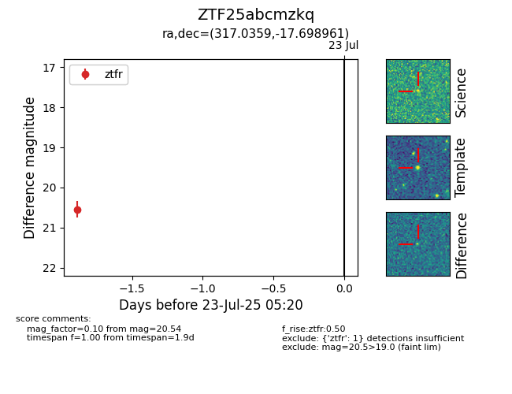

Target ZTF25abcmzkq at 2025-07-23 12:37, see:
FINK: fink-portal.org/ZTF25abcmzkq
Lasair: lasair-ztf.lsst.ac.uk/objects/ZTF25abcmzkq
ALeRCE: alerce.online/object/ZTF25abcmzkq
alt names
ZTF25abcmzkq (ztf,fink)
coordinates:
equatorial (ra, dec) = (317.0359,-17.69896)
galactic (l, b) = (31.0027,-37.94518)
photometry
last ztfr=20.54
1 ztfr detections
